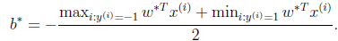

支持向量机(SVM)（三）-- 最优间隔分类器（optimal margin classifier）
在之前为了寻找最有分类器，我们提出了如下优化问题：
在这里我们可以把约束条件改写成如下：
首先我们看下面的图示：
很显然我们可以看出实线是最大间隔超平面，假设×号的是正例，圆圈的是负例。在虚线上的点和在实线上面的两个一共这三个点称作支持向量。现在我们结合KKT条件分析下这个图。

我们从式子和式子 可以看出如果
可以看出如果 那么，
那么，
这个也就说明时，w处于可行域的边界上，这时才是起作用的约束。
1、那我们现在可以构造拉格朗日函数如下：
注意到这里只有 没是因为原问题中没有等式约束，只有不等式约束。
没是因为原问题中没有等式约束，只有不等式约束。
2、接下来我们对w和b分别求偏导数。
并得到
3、将上式带回到拉格朗日函数中得到：
由于，因此简化为
4、现在我们得到了关于w和b的可以最小化的等式，我们在联合 这个参数，当然他的条件还>=0，现在我们可以得到如下的二元优化等式了：
这个参数，当然他的条件还>=0，现在我们可以得到如下的二元优化等式了：
5、现在你还必须知道我们之前讲解的条件一是，二是KKT条件：
很显然存在w使得对于所有的i。因此，一定存使 是原问题的解是对偶问题的解。
是原问题的解是对偶问题的解。
如果求出 （也就是），根据
（也就是），根据

即可求出b。即离超平面最近的正的函数间隔要等于离超平面最近的负的函数间隔。
6、现在我们在看另外一个问题：
由
所
这里我们将向量内表示
现在可以看出我要计算等式的话就只需要计算向量的内积就好了，同时要 在支持向量上面的话，那，这样就更简单了，因此很多的值都是0。